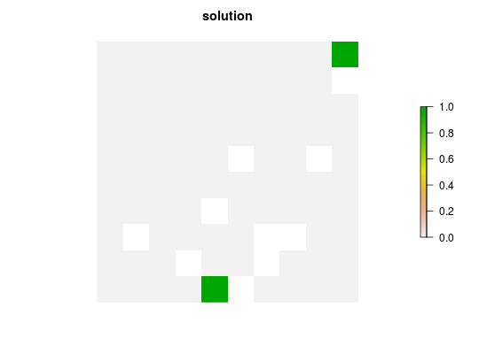

Set an objective to find the solution aims to represent one instance of as many features as possible within a given budget. This type of objective does not require the addition of targets. The mathematical formulation underpinning this function is different from versions prior to 3.0.0.0; see Details section for more information.
add_max_cover_objective(x, budget)
| x |
|
|---|---|
| budget |
|
A problem objective is used to specify the overall goal of the conservation planning problem. Please note that all conservation planning problems formulated in the prioritizr package require the addition of objectives. Failing to do so will return a default error message when solving.
The maximum coverage problem seeks to find the set of planning units that
maximizes the number of represented features, while keeping cost within a
fixed budget. Here, features are treated as being represented if
the reserve system contains any non-zero amount of the feature
(specifically, an amount greater than 1). One
situation where these problem formulation could be useful is when dealing
with binary biodiversity data which indicate the presence of suitable
habitat. Check out the add_max_features_objective for a more
generalized formulation which can accommodate user-specified representation
targets.
In versions prior to 3.0.0.0, this objective function was implemented a
different mathematical formulation. This formulation is based on the
historical maximum coverage reserve selection formulation (Church & Velle
1974; Church et al. 1996). To access the formulation used in versions
prior to 3.0.0.0, please see the add_max_utility_objective
function.
The maximum coverage objective for the reserve design problem can be expressed mathematically for a set of planning units (\(I\) indexed by \(i\)) and a set of features (\(J\) indexed by \(j\)) as: $$\mathit{Maximize} \space \sum_{i = 1}^{I} -s \space c_i + \sum_{j = 1}^{J} y_j w_j \\ \mathit{subject \space to} \\ \sum_{i = 1}^{I} x_i r_{ij} >= y_j \times 1 \forall j \in J \\ \sum_{i = 1}^{I} x_i c_i \leq B$$
Here, \(x_i\) is the decisions variable (e.g.
specifying whether planning unit \(i\) has been selected (1) or not
(0)), \(r_{ij}\) is the amount of feature \(j\) in planning unit
\(i\), \(y_j\) indicates if the solution has meet
the target \(t_j\) for feature \(j\), and \(w_j\) is the
weight for feature \(j\) (defaults to 1 for all features; see
add_feature_weights to specify weights). Additionally,
\(B\) is the budget allocated for the solution, \(c_i\) is the
cost of planning unit \(i\), and \(s\) is a scaling factor used to
shrink the costs so that the problem will return a cheapest solution when
there are multiple solutions that represent the same amount of all features
within the budget.
Note that this formulation is functionally equivalent to the
add_max_features_objective function with absolute targets
set to 1.
Church RL and Velle CR (1974) The maximum covering location problem. Regional Science, 32: 101--118.
Church RL, Stoms DM, and Davis FW (1996) Reserve selection as a maximum covering location problem. Biological Conservation, 76: 105--112.
add_feature_weights, objectives.
# load data data(sim_pu_raster, sim_features) # set a 90th percentile threshold to the feature data sim_features_binary <- sim_features thresholds <- raster::quantile(sim_features, probs = 0.9, names = FALSE, na.rm = TRUE) for (i in seq_len(raster::nlayers(sim_features))) sim_features_binary[[i]] <- as.numeric(raster::values(sim_features[[i]]) > thresholds[[i]]) # create problem p <- problem(sim_pu_raster, sim_features_binary) %>% add_max_cover_objective(5000) %>% add_binary_decisions() # solve problem s <- solve(p)#> Optimize a model with 6 rows, 95 columns and 140 nonzeros #> Variable types: 0 continuous, 95 integer (95 binary) #> Coefficient statistics: #> Matrix range [1e+00, 2e+02] #> Objective range [1e-10, 1e+00] #> Bounds range [1e+00, 1e+00] #> RHS range [5e+03, 5e+03] #> Found heuristic solution: objective -0.0000000 #> Presolve removed 6 rows and 95 columns #> Presolve time: 0.00s #> Presolve: All rows and columns removed #> #> Explored 0 nodes (0 simplex iterations) in 0.00 seconds #> Thread count was 1 (of 4 available processors) #> #> Solution count 2: 5 -0 #> #> Optimal solution found (tolerance 1.00e-01) #> Best objective 4.999999999789e+00, best bound 4.999999999789e+00, gap 0.0000%# plot solution plot(s, main = "solution", axes = FALSE, box = FALSE)